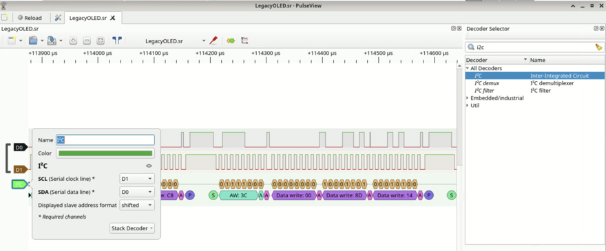

legacyOLED
合作者：@NanoApe
附件中是一个 LegacyOLED.sr 文件，可以用 sigrok 的 GUI PulseView 打卡，打开以后，发现是一个 I2C 协议，用内置的 I2C decoder 进行解析：

可以看到里面的一系列的 I2C command。经过一番搜索，可以找到对应的 SSD1306 模块的 datasheet。剩下来要做的事情就是：
- 从 PulseView 导出 I2C decode 的结果
- 解析 I2C，模拟 SSD1306 的功能
- SSD1306 内部是一个 128 x 64 的点阵，通过 page 和 column 指针来索引，每次写入 8 个 bit
- 通过解析各个命令，可以知道如何更新点阵里的值
- 把每次操作后的点阵转化为图片保存下来
模拟器：
import numpy as np
from PIL import Image
# export annotations in pulseview to annotations file
s = ""
arr = np.zeros((64, 128, 3), dtype=np.uint8)
data = bytearray()
page = 0
page_lo = 0
page_hi = 7
column = 0
column_lo = 0
column_hi = 127
mode = "page"
j = 0
for line in open("annotations"):
if "Data write" in line:
s += line.split()[-1]
if "Stop" in line:
b = bytes.fromhex(s)
control = b[0]
if control == 0x40: # data
print(f"Write {len(b)-1} bytes")
for byte in b[1:]:
# print(f"Write {byte} to page {page} col {column}")
for i in range(8):
bit = (byte >> i) & 1
arr[page * 8 + i, column] = bit * 255
if mode == "page":
column += 1
if column >= column_hi + 1:
column = column_lo
elif mode == "vertical":
page += 1
if page >= page_hi + 1:
page = page_lo
column += 1
if column >= column_hi + 1:
column = column_lo
page = page_lo
elif mode == "horizontal":
column += 1
if column >= column_hi + 1:
column = column_lo
page += 1
if page >= page_hi + 1:
page = page_lo
column = column_lo
else:
assert False
else:
print(b.hex())
if b[1:] == b"\xaf":
print("Display ON")
elif b[1:] == b"\xa1":
print("Horizontal Flip")
elif b[1:] == b"\xc8":
print("Scan Reverse")
elif b[1] >= 0xB0 and b[1] <= 0xB7:
print(f"Set page start {b[1]-0xb0}")
page = b[1] - 0xB0
elif b[1:] == b"\x00":
print("Set column lower 00")
column = column & 0xF0
elif b[1:] == b"\x10":
print("Set column higher 00")
column = column & 0x0F
elif b[1:] == b"\x20\x01":
print("Vertical address")
mode = "vertical"
elif b[1:] == b"\x20\x00":
print("Horizontal address")
mode = "horizontal"
elif b[1] == 0x21:
column_lo = b[2]
column_hi = b[3]
column = column_lo
print(f"Set column address {column_lo} {column_hi}")
elif b[1] == 0x22:
page_lo = b[2] & 0x7
page_hi = b[3] & 0x7
page = page_lo
print(f"Set page address {page_lo} {page_hi}")
elif b[1] == 0x8D:
print("Enable charge pump")
else:
print("Control", b[1:].hex())
assert False
s = ""
# recover img
j += 1
image = Image.fromarray(arr)
image.save(f"result-{j}.png")
print(f"Saved to result-{j}.png")运行完，可以发现最后一张图就是强网杯的 logo：
但是这里并没有 flag，所以要往回找之前的输出，发现一个比较可疑的：
@NanoApe 提示，可以用 zsteg 求解：
$ zsteg result-1095.png
b1,r,lsb,xy .. text: "Congratulations on your incredible success! "结果被截断了，让 zsteg 输出完整内容：
$ zsteg -E b1,r,lsb,xy result-1095.png
Congratulations on your incredible success! ��� flag is qwb{Re41_Ma5te7-O5-S5Dl3o6_12C}! You bre really smart"?��������������������������������������������?���?����?����������������LJ������������������������������?�����?�������������������������������������������������?���?��?���?��?���?���������������������������������?��